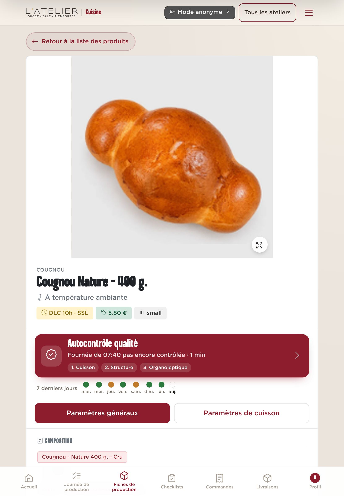
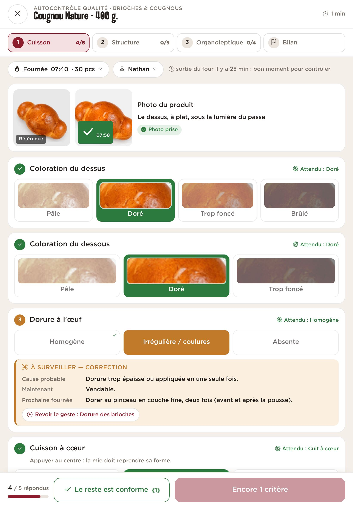
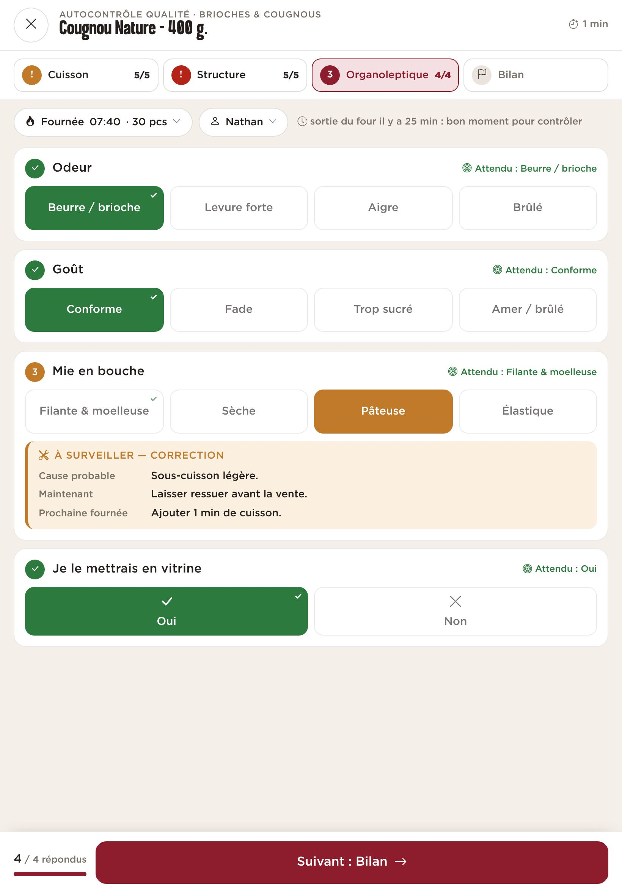
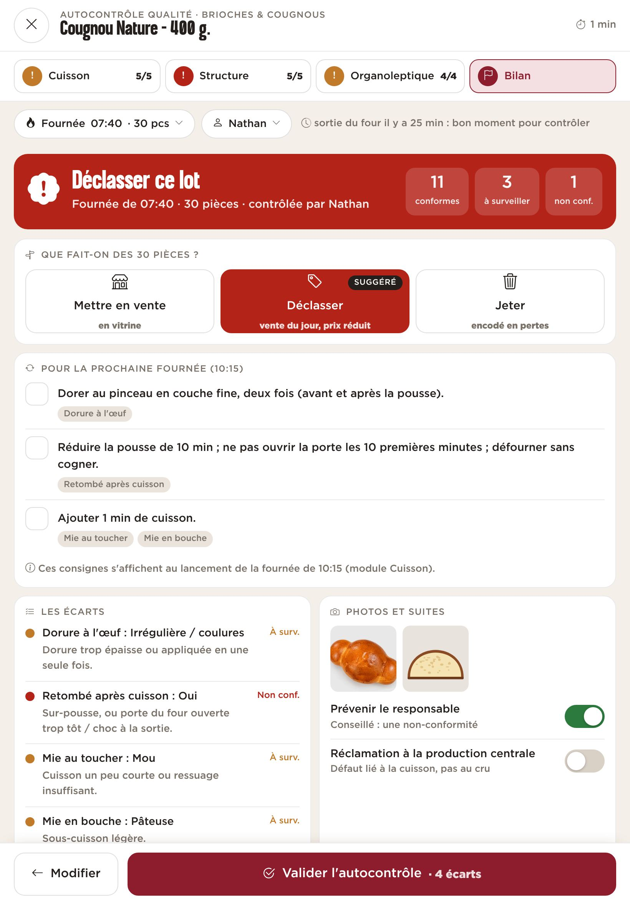
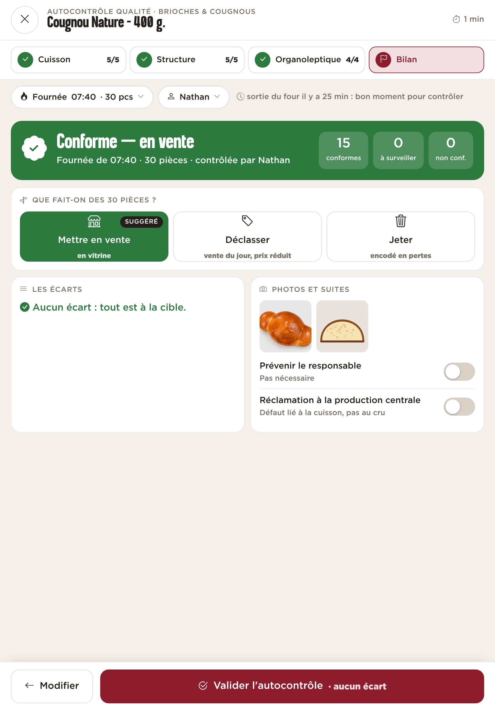
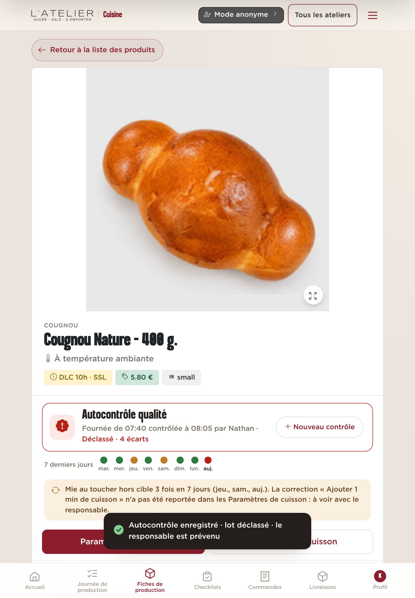
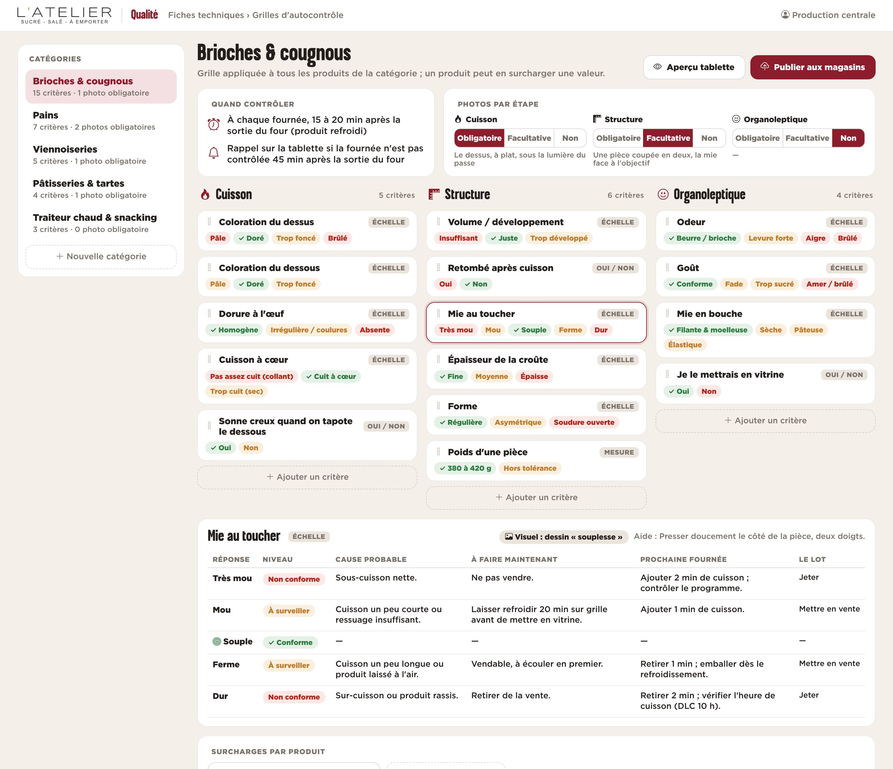

App Cuisine, tablette en portrait · trois étapes (cuisson, structure, organoleptique), photos, oui / non, corrections · grilles par catégorie

01 · La fiche produitLe bouton « Autocontrôle qualité » sous le nom, les trois étapes annoncées, les 7 derniers jours en pastilles.

02 · 1. CuissonPhoto obligatoire à côté de la référence ; teintes en vignettes ; un écart ouvre sa correction sur place.03 · 2. StructureVolume dessiné contre la cible, « Retombé après cuisson » en oui / non, mie au toucher de très mou à dur.04 · 2. Structure (suite)Épaisseur de la croûte en coupe, forme vue de dessus, poids avec sa plage de tolérance.

05 · 3. OrganoleptiqueOdeur, goût, mie en bouche, « je le mettrais en vitrine » : un toucher par ligne.

06 · Bilan avec écartsDécision suggérée pour le lot, réglages de la prochaine fournée sans doublon, écarts, photos, suites.

07 · Bilan conformeTout à la cible : « Le reste est conforme » à chaque étape, le lot part en vitrine.

08 · La fiche, aprèsL'état du jour remplace le bouton ; un défaut qui revient 3 fois en 7 jours est signalé.

09 · Paramétrage réseauUne grille par catégorie : critères par étape, photo obligatoire ou non, corrections, surcharges par produit.